Dark background (Pages-like)

 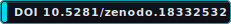
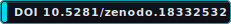


Inline example:

 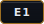
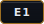
 “Deterministic routing invariants”
“Deterministic routing invariants”
Canonical badges live under docs/assets/badges/v2/.
The mono/ and neon/ folders are compatibility copies.
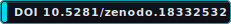
Inline example:
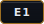
“Deterministic routing invariants”


Inline chips:


 |
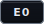
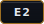
|
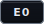
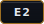

 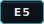
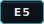